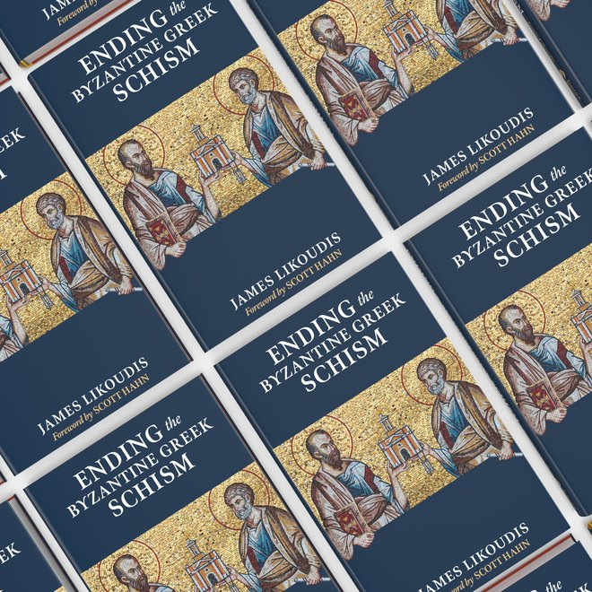
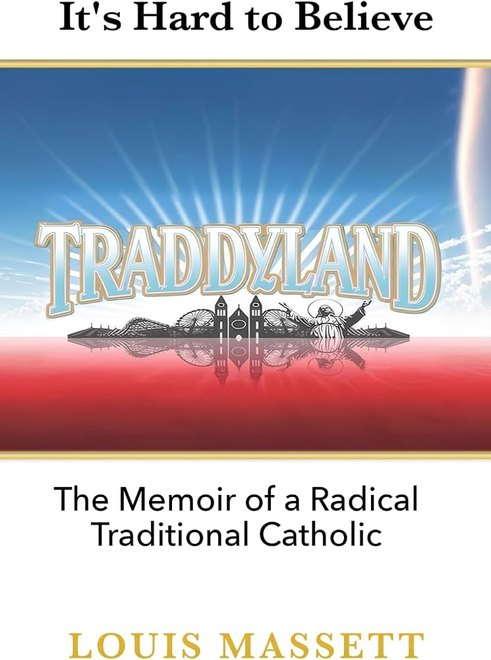

Where to Turn: A Reader’s Guide Through the Crisis of Traditionalism and the SSPX
Trustworthy books and news sources for the confused, the grieving, and those watching someone they love drift toward the errors of radical traditionalism — ten books across five sections, a community for those leaving the movement, and a word on where to read the news.
Read the Guide ›
East and West: A Catholic–Orthodox Reading Guide
The heart of the Foundation’s mission — the Likoudis trilogy on reunion, the essential modern scholarship, the Church’s own words from Ut Unum Sint to the Chieti document, and the living institutions where the dialogue continues.
Read the Guide ›Further guides are in preparation and will be added here as they are published.

Traddyland
Louis Massett’s memoir of growing up inside the SSPX world of St. Marys, Kansas — and finding his way out.
traddyland.com ›
The Sacrifice of Praise
Andrew Mioni on the fundamentals of worship beneath the liturgy debates — with a foreword by Andrew Likoudis.
En Route Books ›Coming This Month
A new book by Gary Campbell, a former priest of the Society of St. Pius X, edited and introduced by Andrew Likoudis. Details will appear here when it arrives.
The Kydones Review
The Foundation’s journal of ecumenical scholarship on the Catholic–Orthodox question.
Essay Archive
Collected essays and articles from James Likoudis and the Foundation’s contributors.
Video Archive
Lectures, interviews, and recorded talks.
Books
Books written, edited, and published under the Foundation’s auspices.
Book Club
The Foundation’s reading circle, working through the Likoudis corpus together.